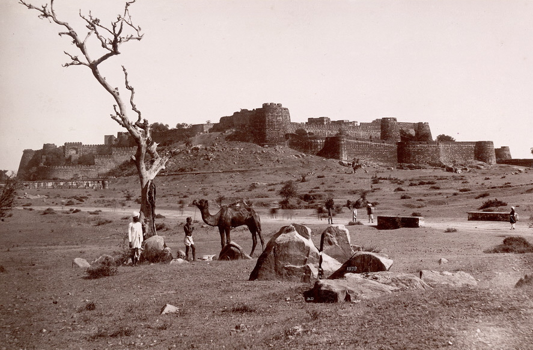
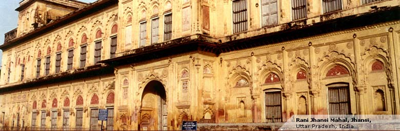
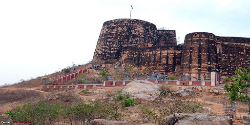
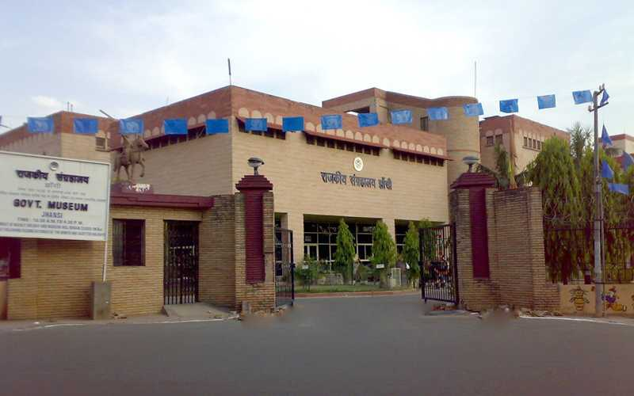

Jhansi has a prominent place in Indian history, particularly due to the role played by Rani Lakshmi Bai, the queen of the Maratha-ruled state of Jhansi, during the Indian Rebellion of 1857. She is remembered for her bravery and leadership in the face of adversity.
The Rani Mahal, or Queen's Palace, is a historic palace in Jhansi. It served as the residence of Rani Lakshmi Bai and is an important landmark in the city. The palace reflects a blend of Indian and European architectural styles.
Jhansi Fort is another notable attraction. It is situated on a hill and offers panoramic views of the city. The fort has witnessed many historical events and is a symbol of Jhansi's resistance during times of war.
Jhansi has museums like the Rani Mahal Archaeological Museum that display artifacts and memorabilia related to the history of the region, providing visitors with insights into the past.
The city is home to various temples, reflecting its cultural and religious diversity. Some prominent ones include the Jhansi Kila Temple and the St. Jude's Shrine..
In addition to its historical significance, Jhansi is also an important center for trade and commerce in the region. The city has a bustling market where locals and tourists can explore and shop for traditional items.
Jhansi is well-connected by rail and road, making it accessible for travelers. The Jhansi Junction railway station is a major railway hub in the region.